Why this site exists
Settings of Humanity is a unified public civic-data workspace — laid out like a desktop Settings app — so citizens can inspect burdens that actually hit households before diving into partisan attention markets.
Charter (nonnegotiable): truth before virality; human dignity; poverty focus; evidence hierarchy; causation discipline (separate changed-after / correlated / plausibly contributed / caused); method transparency; fair representation + right of response; visible corrections; peaceful civic purpose. No clickbait, rage-bait, tribal framing, or dehumanization.
Human Dignity & Household Security
Food and energy as % of income, income vs politics overlays, with explicit caveats. Start here.
Better World Scorecard
Twelve dignity indicators — definitions, sources, geography, and “politicians may falsely claim credit by…” for each. Many cells: data wiring soon.
As-of snapshot
Data vintage 2026-09-12. Numbers embedded from existing CSV/JSON exports — not invented for launch copy.
Moral standards (short)
- People who are poor or precarious are not props for virality.
- Documented association is not guilt; disagreement is not dehumanization.
- Media attention size ≠ moral priority — we show attention markets separately from household burdens.
- When we are wrong, we correct in public on Updates and Standards.
What you can do
- Read Household Security charts with the causation labels — do not treat correlation as credit.
- Use the Scorecard definitions when evaluating claims about “solving” poverty or crime.
- Share method notes, not rage clips. Link the Standards page when citing numbers.
- Offer a right of response: if you are named in Documented Associations and have a correction, that belongs in the corrections log.
- Act locally where burdens bite: food banks, utility assistance, housing orgs — evidence informs, neighbors serve.
r vs lean
US avg —
r lean vs income
Food burden
Proxy: standardized restaurant basket × 8 visits/month ÷ annual median household income. Covered: 19 states / 24 metros in the pilot. Highest burden states in export: FL (~5.5%), AZ, MO; lowest: VA, CO, TX. Correlation of food burden vs right-lean (vote-weighted) ≈ +0.40 — correlated, not caused.
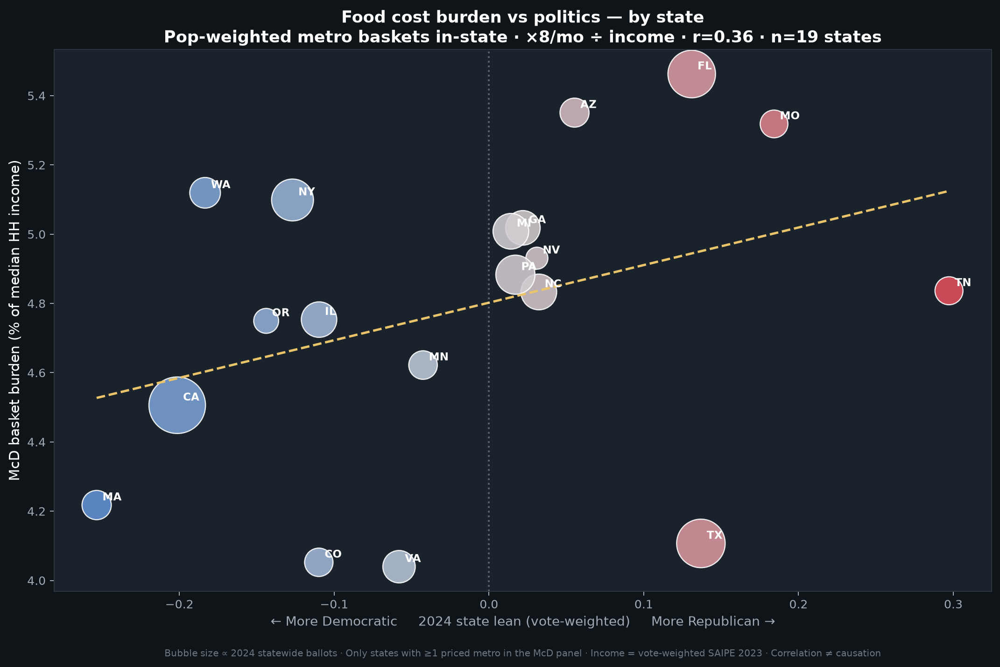
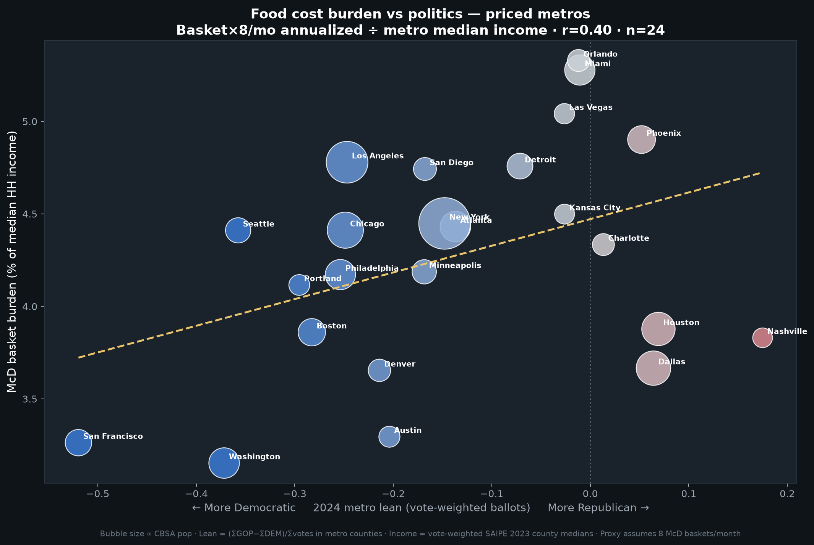
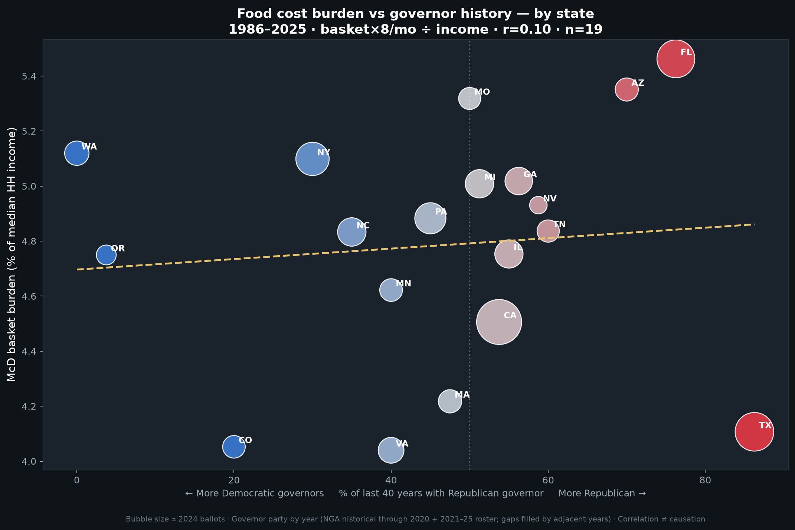
Energy burden (electricity + gas where available)
EIA residential electricity ~Jun 2026: US average ≈ 19.4 ¢/kWh. At 900 kWh/mo, mean burden ≈ 2.6% of MHI (HI ~6.0%; UT ~1.5%). Correlation of ¢/kWh vs right-lean ≈ −0.56 across states — again correlated. Gasoline series incomplete in some exports; combined burden charts note missing gas.
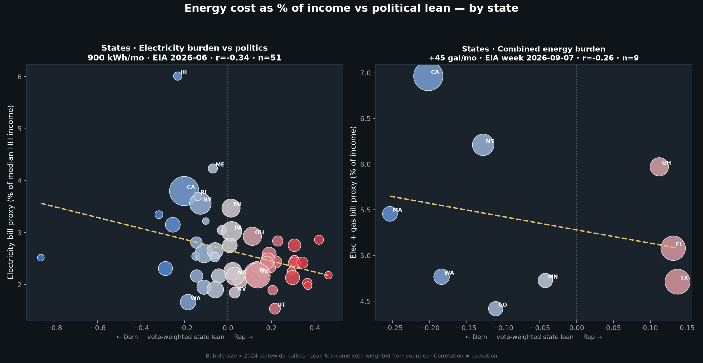
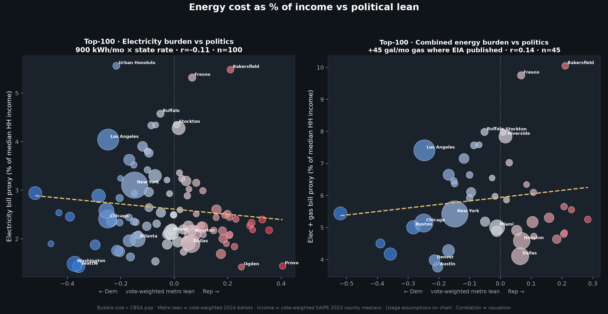
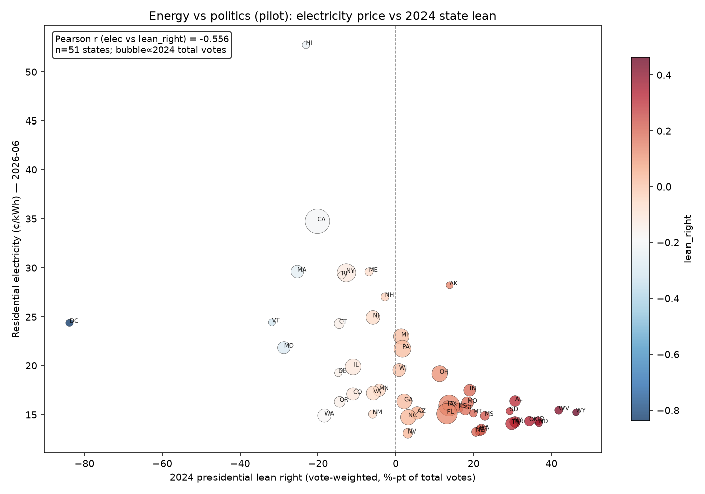
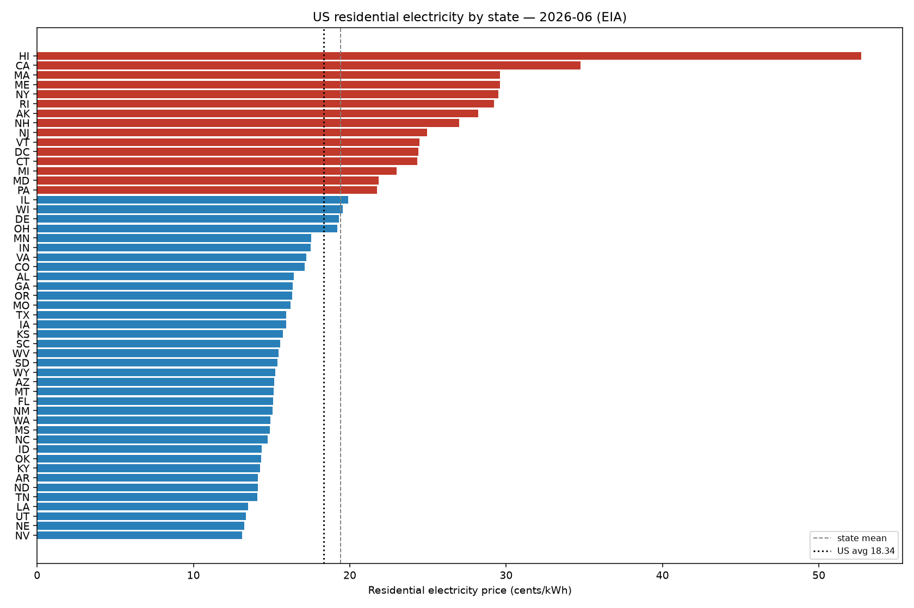
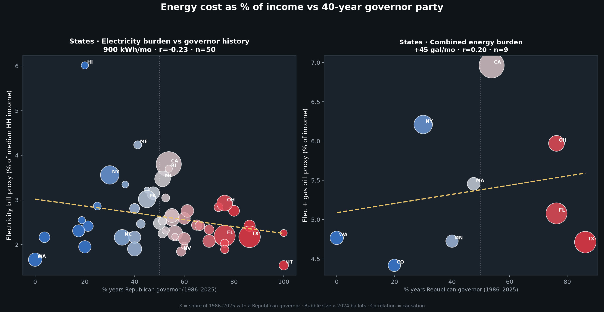
Income vs politics
Census SAIPE 2023 MHI × 2024 county presidential lean (GOP−DEM share). 3,116 counties; correlation lean-right vs income ≈ −0.31. High-income counties lean left on average in this vintage — correlated pattern, composition-heavy, not a moral ranking of voters.
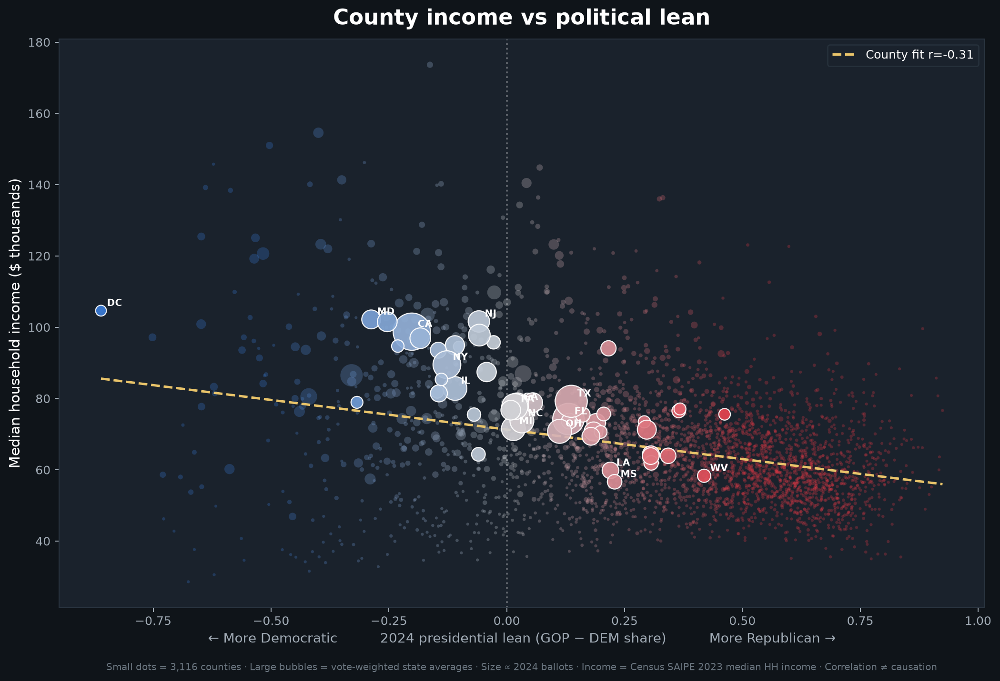
Restaurant price index pilot
Companion restaurant-inflation exports: 24 metros / 229 counties; lean-right vs price index ≈ −0.45 (metros, vote-weighted). Vote-weighting matters (e.g., Detroit lean can flip vs unweighted).

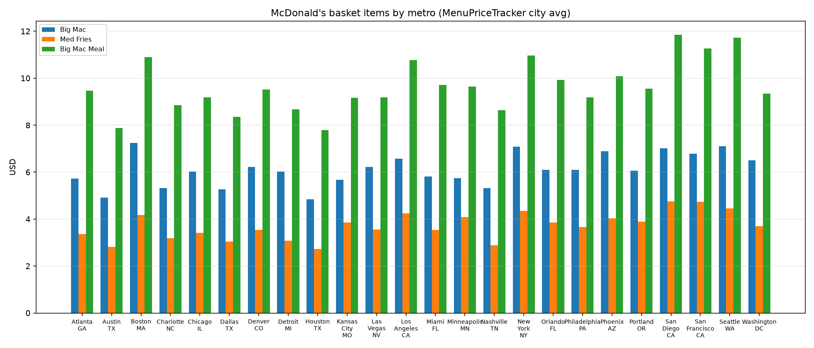
Structure for a dignity-first scorecard. Prefer US county/metro at launch, then expand. Each indicator lists definition, best source, geography, caveats, and a dedicated “politicians may falsely claim credit by…” warning.
partial = some wiring from existing exports · data wiring soon = definition ready, series not yet embedded.
Loading indicators…
SocialBlade US News & Politics top by subscribers (fetched 2026-09-12) — includes institutional and non-US channels.

By band:
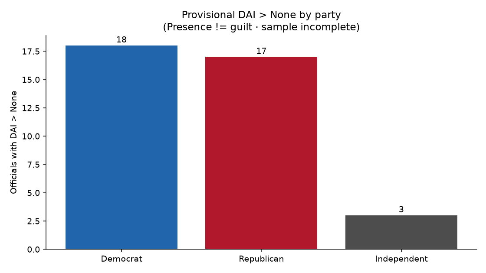
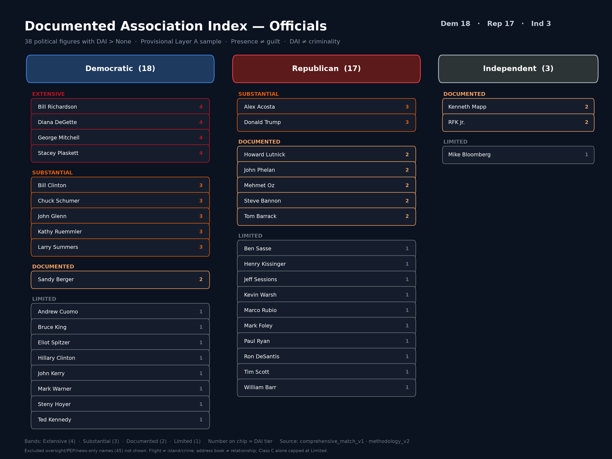
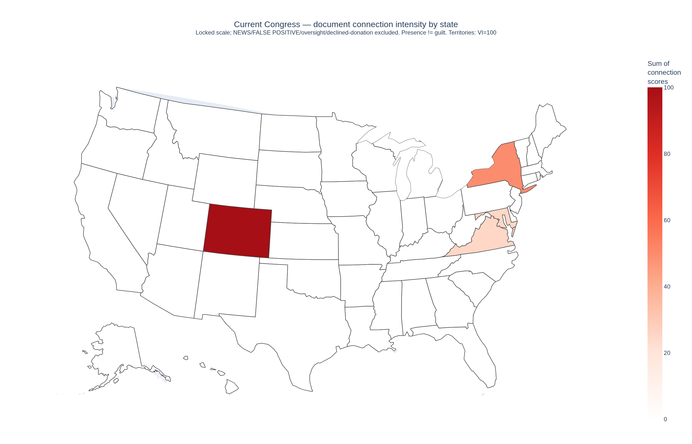
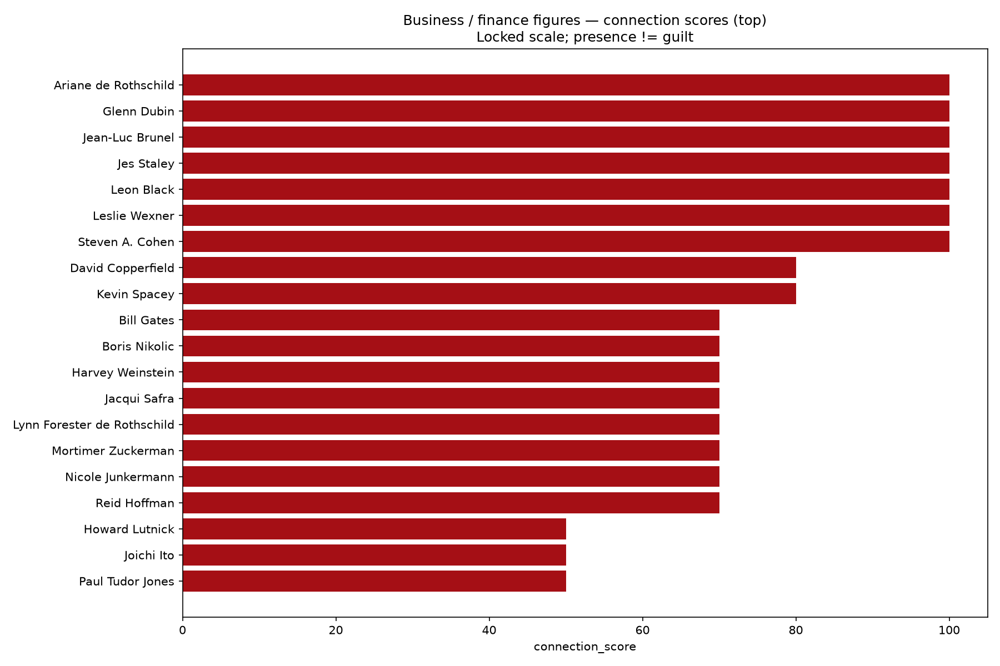
Methodology (summary)
- Layer A (primary documents) feeds DAI; news corroboration is separate.
- Class C alone cannot push a person above Limited.
- Public DAI requires identity confidence P1–P3.
- Same document_id counted once in aggregates.
- 45 names logged as excluded (oversight-only, news-only, collisions, etc.) — exclusion is part of fair representation.
- Roster still incomplete vs full public DOJ / Oversight dumps.
Party split in current export: D 18 / R 17 / I 3 among 38 officials with DAI > none. Do not weaponize near-parity; do not erase it either.
Right of response: factual corrections belong in the Standards corrections log.
Loading feed…
Charter
Jesus-shaped but nonsectarian: truth before virality; human dignity; poverty focus; evidence hierarchy; causation discipline; method transparency; fair representation + right of response; visible corrections; peaceful civic purpose. No clickbait / rage-bait / tribal framing / dehumanization.
Causation discipline
- Changed-after — temporal sequence only; weakest.
- Correlated — statistical association with disclosed sample and measure.
- Plausibly contributed — mechanism + evidence beyond correlation; still not proof of sole cause.
- Caused — reserved for designs that can support causal claims; we rarely reach this bar on observational civic overlays.
Actionability standard
Prefer metrics citizens or local institutions can act on (burdens, access, victimization, housing exits) over metrics that only fuel national tribal identity. Attention-market charts are labeled as attention, not virtue.
Corrections log
- 2026-09-12 — Site launch. No post-launch corrections yet. Errors should be logged here with date, what was wrong, and the fix.
Key sources (launch)
- Census SAIPE / ACS (income, poverty forthcoming)
- EIA electric sales & revenue; gasoline where present
- Restaurant basket pilots (DoorDash / local scrapes) — restaurant-inflation exports
- 2024 county presidential returns (lean construction)
- SocialBlade / vidIQ YouTube snapshots (2026-09-12)
- Epstein-related public court / flight / contact documentation via political-data DAI v2 methodology
- Planned: HUD PIT, BJS NCVS, CDC WONDER, EPA EJScreen, Pew GR/SHI, V-Dem (cited carefully)
Companion
/workspace/youtube-audiences-site/ remains the dedicated YouTube Audiences experience; this umbrella links it without replacing it.